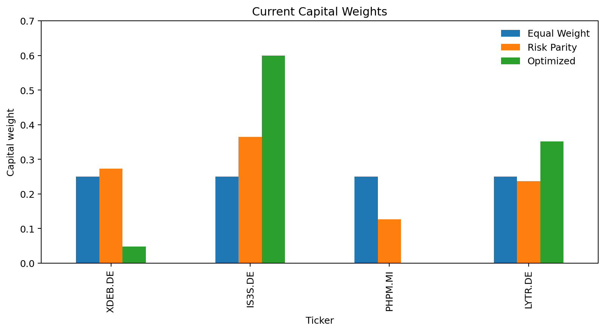
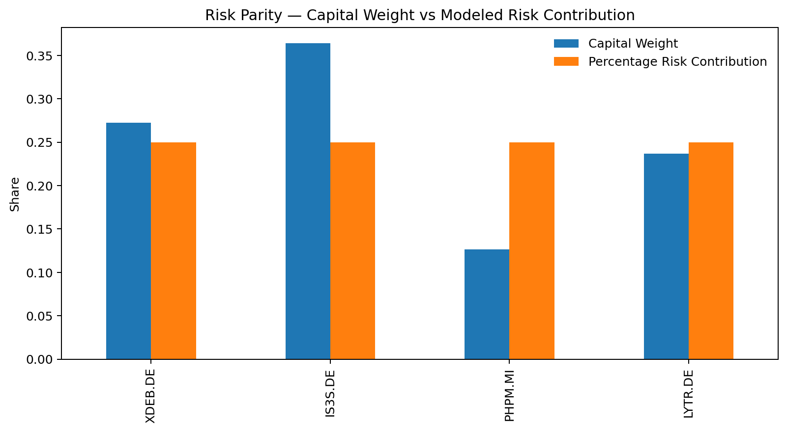
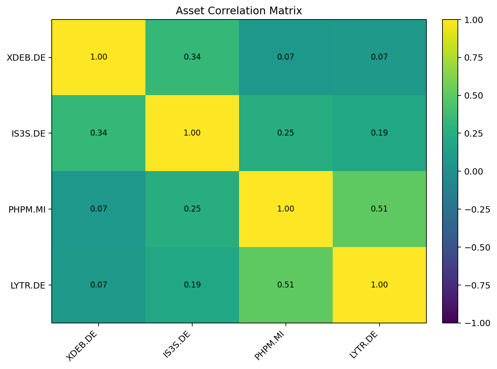
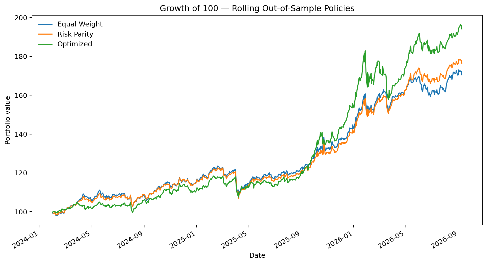
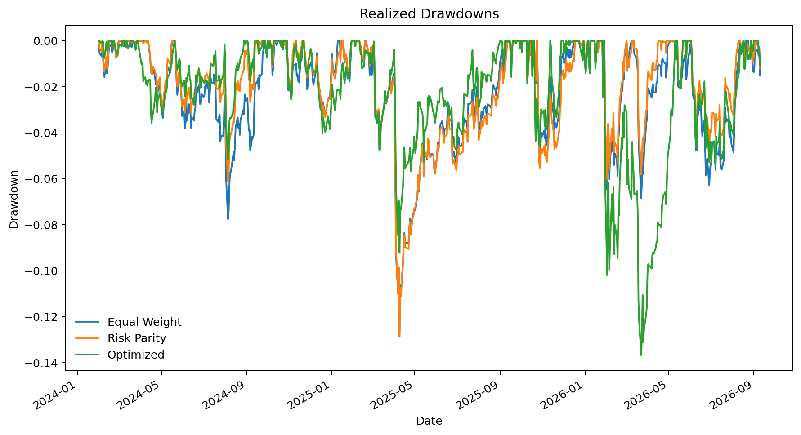
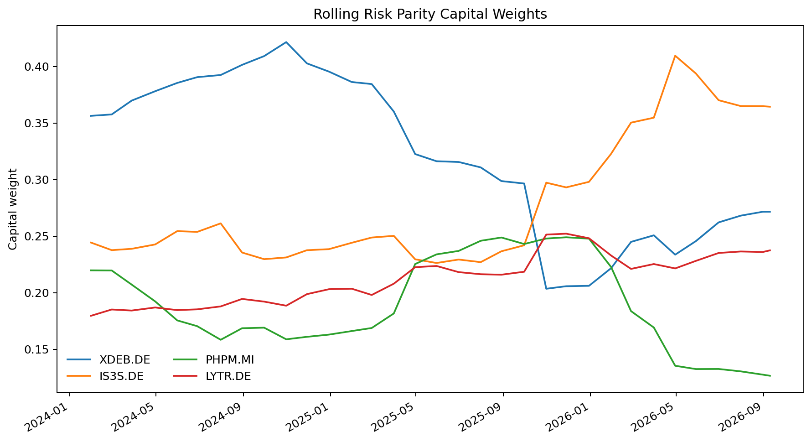
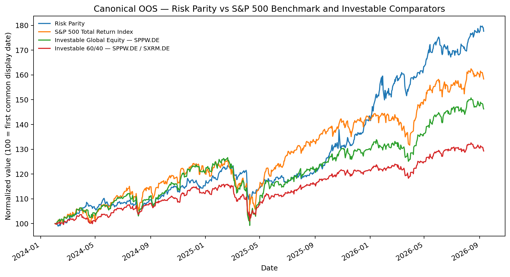
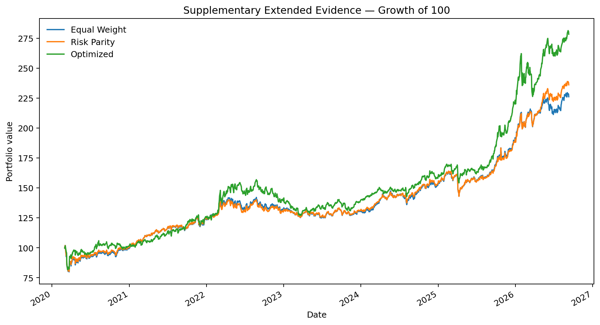
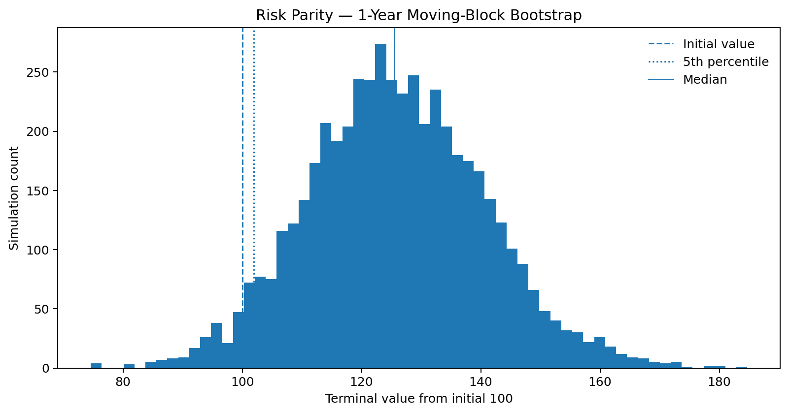
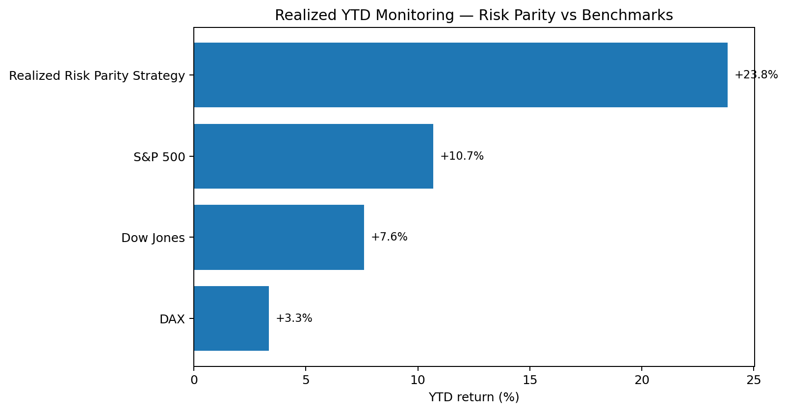

A portfolio built for regime uncertainty rather than regime prediction
The A-CLUSTER All-Weather Macro Regime Portfolio is a systematic multi-asset framework designed for an environment in which no single macroeconomic scenario can be assumed to persist. Growth, inflation, monetary tightening, recession and geopolitical stress affect asset classes differently. The portfolio therefore combines exposures with different economic functions rather than concentrating on one forecast.
The objective is not to identify the next winning asset. It is to build a portfolio whose components respond differently across regimes and then choose an allocation policy that preserves that diversification with an acceptable level of concentration, turnover and estimation risk.
From macroeconomic logic to an investable portfolio
The construction process starts with economic purpose, not with historical return ranking. Each sleeve is selected because it represents a distinct macro function. Statistical tools are then used to test whether those exposures actually behave differently, and allocation engines are compared under identical research conditions.
1. Define the investable universe
Use European exchange-traded instruments suitable for practical implementation, with UCITS funds supplemented where necessary by UCITS-eligible exchange-traded commodity products.
2. Map economic functions
Identify exposures intended to behave differently across slowdown, recovery, inflation, falling real rates and geopolitical stress.
3. Test diversification
Use correlation analysis and hierarchical clustering to verify that the selected assets are not simply different labels for the same underlying risk driver.
4. Compare allocation engines
Apply Equal Weight, Risk Parity and constrained optimization to the same universe, same estimation window and same rebalance dates.
5. Evaluate robustness
Compare realized return and drawdown together with modeled risk contributions, concentration, one-way rebalance turnover, effective N and estimation-window sensitivity.
6. Select the implementation policy
Prefer the method whose assumptions, diversification properties and governance burden best fit the portfolio objective rather than the method with the highest single historical statistic.
Diversify economic functions, then test the implementation
The portfolio architecture comes first. Allocation policies are evaluated through modeled risk, realized outcomes, concentration, turnover and estimation sensitivity. No strategy is selected from a single performance statistic.
Four economically distinct sleeves
Minimum Volatility Equity
Defensive global equity function.
Global Value Factor
Cyclical / recovery equity function.
Physical Precious Metals
Monetary and geopolitical stress diversifier. ETC/ETP, not a UCITS fund.
Energy & Metals Commodities
Inflation and supply-shock function.
Canonical public analysis begins after the January 2023 LYTR benchmark transition. Longer history should be treated as supplementary rather than homogeneous current-strategy history.
Allocation and modeled risk
| Equal Weight | Risk Parity | Optimized | |
|---|---|---|---|
| Ticker | |||
| XDEB.DE | 25.0% | 27.2% | 4.8% |
| IS3S.DE | 25.0% | 36.4% | 60.0% |
| PHPM.MI | 25.0% | 12.6% | 0.0% |
| LYTR.DE | 25.0% | 23.7% | 35.2% |



Performance and governance scorecard
| CAGR | Volatility | Sharpe | Sortino | Max Drawdown | Average Rebalance Turnover | Average Effective N | Average Largest Weight | Maximum Largest Weight | Concentration Flag | |
|---|---|---|---|---|---|---|---|---|---|---|
| Equal Weight | 22.6% | 12.7% | 1.51 | 2.10 | -12.6% | 1.4% | 4.00 | 25.0% | 25.0% | OK |
| Risk Parity | 24.2% | 12.3% | 1.66 | 2.32 | -12.9% | 2.4% | 3.70 | 35.9% | 42.2% | OK |
| Optimized | 28.8% | 14.7% | 1.66 | 2.37 | -13.7% | 10.4% | 2.10 | 58.8% | 60.0% | HIGH |



Primary equity index benchmark
The primary equity-market reference used in this run is S&P 500 Total Return Index (^SP500TR). The preferred specification is the S&P 500 Total Return Index because it includes reinvested distributions and is therefore more comparable with adjusted ETF return series. If the total-return series is unavailable, the page labels the S&P 500 price-index fallback explicitly.
| CAGR | Volatility | Sharpe | Sortino | Max Drawdown | |
|---|---|---|---|---|---|
| S&P 500 Total Return Index | 19.9% | 15.4% | 1.12 | 1.65 | -18.7% |
Investable comparators
For implementation-level comparison, Risk Parity is also compared with adjusted-price investable alternatives: SPPW.DE and a monthly rebalanced 60/40 SPPW.DE / SXRM.DE portfolio.
| CAGR | Volatility | Sharpe | Sortino | Max Drawdown | |
|---|---|---|---|---|---|
| Risk Parity | 24.2% | 12.3% | 1.66 | 2.32 | -12.9% |
| Investable Global Equity — SPPW.DE | 16.3% | 13.6% | 1.04 | 1.45 | -21.6% |
| Investable 60/40 — SPPW.DE / SXRM.DE | 10.5% | 8.4% | 0.99 | 1.41 | -12.7% |

Extended evidence — context, not current-strategy history
The same rolling methodology is applied to the longest common four-instrument yfinance history, producing out-of-sample returns from 2020-03-02 to 2026-09-10. These results provide context only because LYTR's benchmark changed in January 2023. Pre-2023 observations are therefore not a homogeneous history of the current benchmark specification.
| CAGR | Volatility | Sharpe | Sortino | Max Drawdown | |
|---|---|---|---|---|---|
| Equal Weight | 13.2% | 13.5% | 0.84 | 1.14 | -21.7% |
| Risk Parity | 13.9% | 13.1% | 0.91 | 1.24 | -21.2% |
| Optimized | 16.8% | 15.0% | 0.98 | 1.36 | -19.8% |

Monte Carlo as a robustness lens
A moving-block bootstrap resamples observed rolling Risk Parity returns. The distribution is conditional on the historical sample and should not be read as a probability forecast.
| Metric | Value |
|---|---|
| Median terminal value | 125.51 |
| 5th percentile terminal value | 101.94 |
| 95th percentile terminal value | 150.31 |
| 5th percentile return | +1.94% |
| Probability of loss | 3.5% |
| Expected Shortfall — worst 5% mean return | -3.83% |
Lower-tail statistics are expressed as returns to avoid ambiguous sign conventions. Expected Shortfall is the mean return of the worst 5% of simulated terminal outcomes. Regime changes, liquidity shocks and structural breaks can still produce outcomes outside the simulated distribution.

YTD realized strategy performance and current-weight attribution
Two different questions are shown separately. Realized YTD strategy performance comes from the rolling monthly out-of-sample Risk Parity return series, using the weights that applied through time. Current-weight YTD attribution is a diagnostic that applies today's weights to each asset's YTD return; it is not a realized strategy track record.
Realized YTD strategy vs benchmarks
| YTD Return | |
|---|---|
| Realized Risk Parity Strategy | 23.8% |
| Dow Jones | 7.6% |
| S&P 500 | 10.7% |
| DAX | 3.3% |
Current-weight attribution summary
| Diagnostic | Value |
|---|---|
| Current-weight YTD attribution — risky sleeve | 23.9% |
| Current-weight YTD attribution — total portfolio (90% risky overlay) | 21.5% |

Current-weight YTD attribution by sleeve
| Current Risky Weight | Current Total Portfolio Weight | Asset YTD Return | Current-Weight Attribution (Risky Sleeve) | Current-Weight Attribution (Total Portfolio) | |
|---|---|---|---|---|---|
| XDEB.DE | 27.2% | 24.5% | 6.8% | 1.9% | 1.7% |
| IS3S.DE | 36.4% | 32.8% | 36.6% | 13.3% | 12.0% |
| PHPM.MI | 12.6% | 11.4% | -5.1% | -0.6% | -0.6% |
| LYTR.DE | 23.7% | 21.3% | 39.5% | 9.4% | 8.4% |
Preferred implementation: Risk Parity — conditional, not doctrinal
No automatic winner from return, Sharpe or a composite score. A change in covariance structure, concentration, turnover, sensitivity, instrument design or portfolio purpose can change the preferred implementation.
Limits of the evidence
This material is quantitative research and educational analysis, not individualized investment advice. Historical returns, risk contributions, correlation estimates and simulated distributions are sample-dependent. Transaction costs, taxes, liquidity, currency exposure, tracking difference and implementation constraints can materially alter realized outcomes.